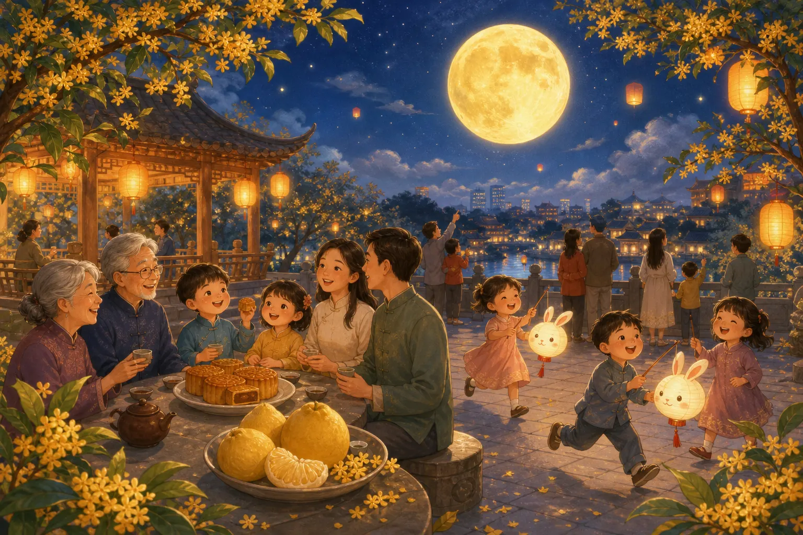

中秋节
Mid-Autumn Festival
Page 1
什么是中秋节？
What Is the Mid-Autumn Festival?

On Mid-Autumn night, many families sit together, look at the moon, eat mooncakes, and talk quietly.
中秋节是中国很重要的传统节日之一。
这一天，很多人会和家人坐在一起，看看又圆又亮的月亮。
大家还会吃月饼、喝茶，也会想起远方的家人和朋友。
Mid-Autumn Festival is one of China's important traditional holidays.
On this day, many families sit together and look at the bright, round moon.
People also eat mooncakes, drink tea, and think about family and friends who are far away.
Page 2
圆圆的月亮
The Round Moon
为什么中秋节要看月亮呢？因为圆圆的月亮常常让人想到“团圆”。
当家人坐在一起，看着同一轮月亮的时候，心里会觉得很温暖。
所以中秋节不只是看月亮，也是一个想念家人、珍惜相聚的节日。
Why do people look at the moon on Mid-Autumn Festival? Because the round moon often makes people think of being together.
When families sit side by side and look at the same moon, they feel warm and close.
So Mid-Autumn Festival is not only about the moon. It is also about missing loved ones and treasuring time together.
Page 3
嫦娥的故事
The Story of Chang'e

In the old story, Chang'e floats gently toward the moon, where the jade rabbit keeps her company.
中秋节有一个很有名的传说，叫“嫦娥奔月”。
很久以前，嫦娥和后羿住在人间。后来，为了保护一份特别的仙药，嫦娥把它吃了下去，慢慢飞到了月亮上。
从那以后，人们看见中秋的月亮，就会想起嫦娥，也会想起自己想念的人。
Mid-Autumn Festival has a famous legend called "Chang'e Flies to the Moon."
Long ago, Chang'e lived on earth with Hou Yi. Later, to protect a special magic medicine, she drank it and slowly floated up to the moon.
From then on, when people saw the Mid-Autumn moon, they thought of Chang'e and of the people they missed.
Page 4
今天人们怎么过中秋？
How Do People Celebrate Today?

On Mid-Autumn night today, some children carry lanterns while families share mooncakes and admire the moon.
今天，很多家庭会一起吃月饼、赏月、聊天。
有些地方还能看到孩子提着灯笼，闻到桂花淡淡的香味。
每个地方的过法可能不一样，可是中秋节里最重要的，还是团圆和思念。
Today, many families celebrate by eating mooncakes, watching the moon, and talking together.
In some places, children carry lanterns, and the sweet smell of osmanthus flowers is in the air.
Different places may celebrate in different ways, but the heart of Mid-Autumn Festival is still togetherness and loving thoughts for others.
中秋快乐！
Happy Mid-Autumn Festival!
中秋节是一个关于月亮、思念和团圆的节日。
抬头看月亮的时候，人们也会想起自己爱的人。
Mid-Autumn Festival is a holiday about the moon, missing loved ones, and being together.
When people look up at the moon, they often think of the people they love.